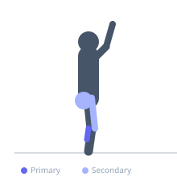
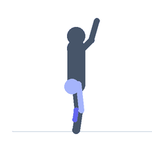

Exercise guide / Jump Rope
Jump Rope
Jump rope is a rhythmic cardiovascular and plyometric exercise in which a rope is swung overhead in a continuous arc as the athlete hops over it with both feet on each revolution. It simultaneously trains cardiovascular fitness, ankle and calf elasticity, timing, coordination, and foot speed, making it one of the most efficient conditioning tools available. Single-under jump rope — one revolution per jump — is the standard entry point before progressing to double-unders.
Primary muscles
gastrocnemius medial
soleus
Secondary muscles
rectus femoris
gluteus maximus
Stabilizers
tibialis anterior
transverse abdominis
Equipment
No Equipment (Bodyweight)


Starting position
- Stand upright holding one handle of the jump rope in each hand, rope behind the heels.
Setup
- Use a rope long enough that it reaches the armpits when both handles are held together underfoot. Adequate overhead and frontal clearance needed.
Steps
- Step 1: Hold one handle in each hand with elbows near the sides, rope behind the body.
- Step 2: Swing the rope overhead using wrist rotation — not full arm swings.
- Step 3: As the rope descends in front, hop off both feet with a small jump — just enough for the rope to pass underneath (2–3 cm clearance).
- Step 4: Land softly on the balls of both feet with slightly bent knees.
- Step 5: Continue the rhythm continuously for the prescribed duration or rep count.
Coaching cues
- Wrist rotation — not arms
- Small hops — stay light
- Ball of foot landing — quiet and springy
Breathing
- Breathe continuously at a rhythm matching your jump cadence.
Range of motion
- Minimal hop height — just enough rope clearance. Soft ball-of-foot landing.
Tempo
- Typically performed for time: 1–5 minute continuous intervals. Or for rep counts in circuits.
Common mistakes
- Jumping too high — wastes energy and slows rhythm
- Swinging the arms instead of using wrist rotation
- Landing on the heels — should land on the balls of the feet
Safety
- High repetitive calf and Achilles demand — increase volume gradually.
- Ensure the floor surface is not too hard (concrete) for extended sessions.
Training
- endurance: 50–200 reps
- endurance: 3–10 sets
- Rest: {'endurance': 60}